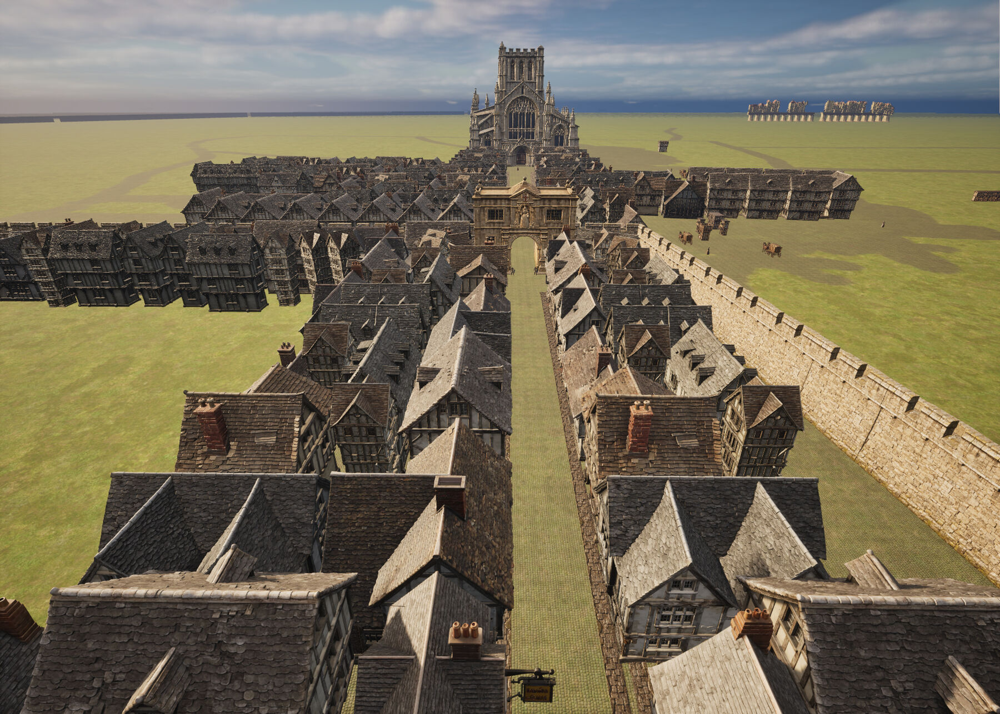
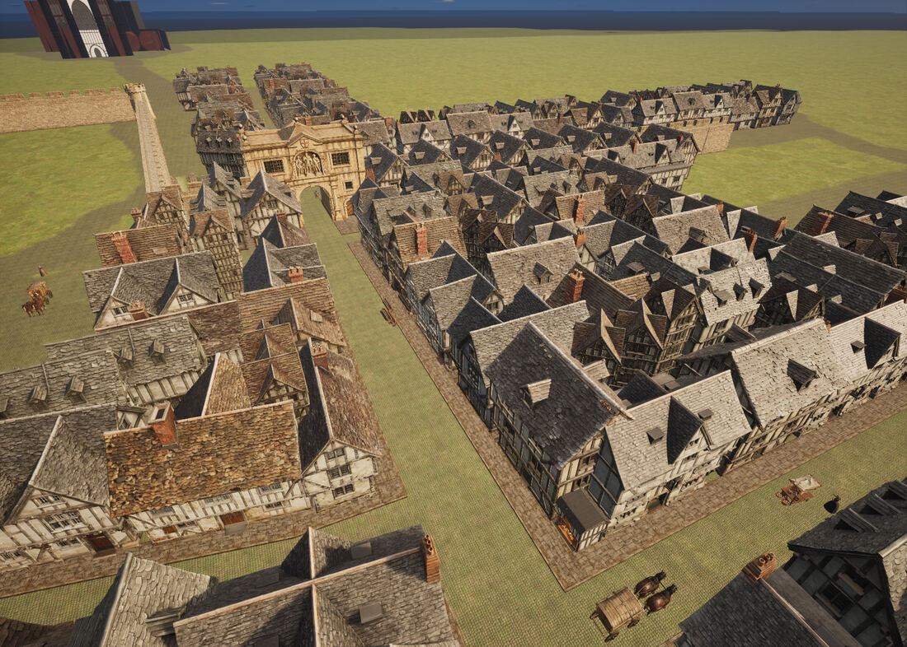
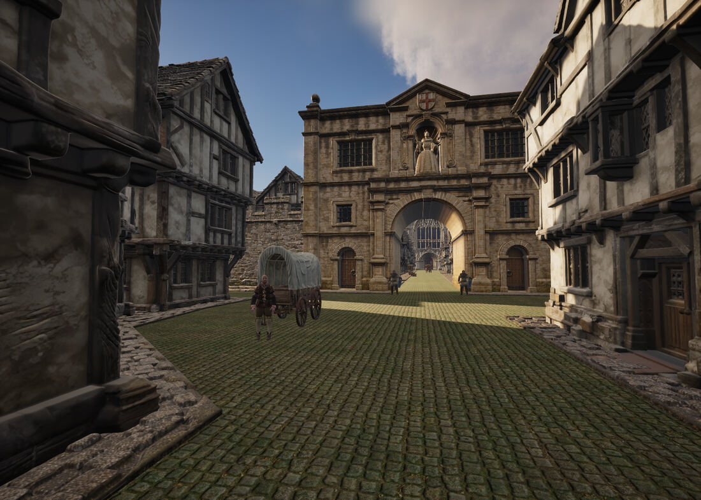
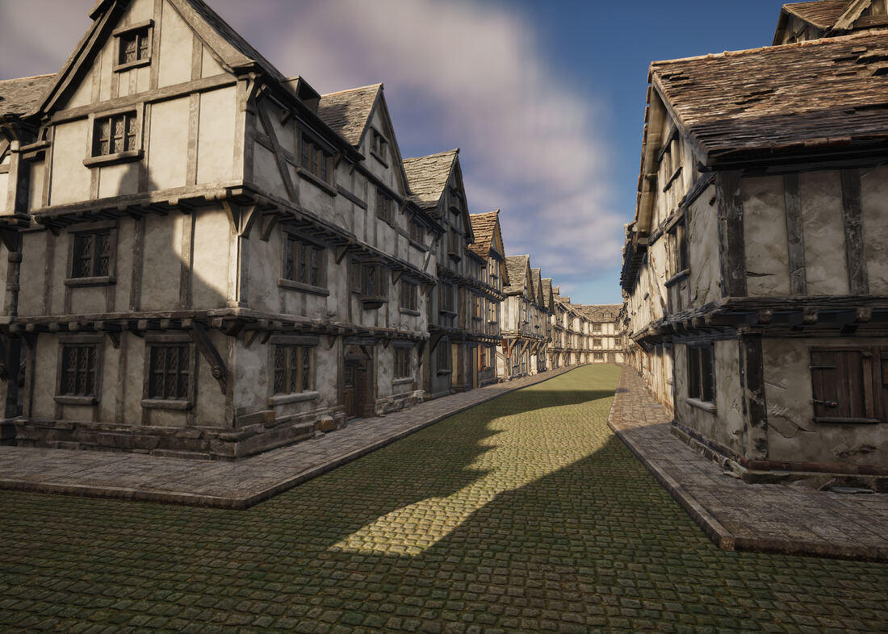
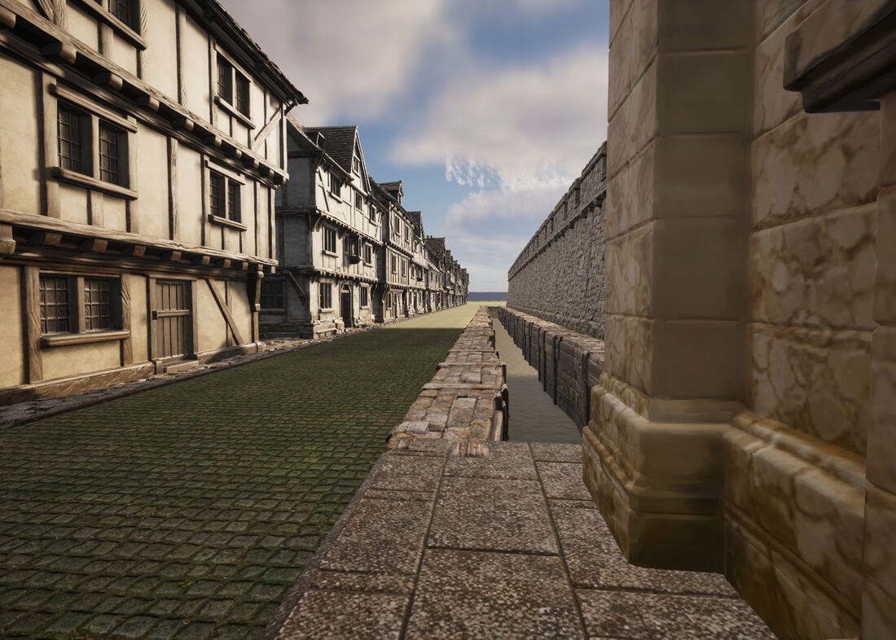
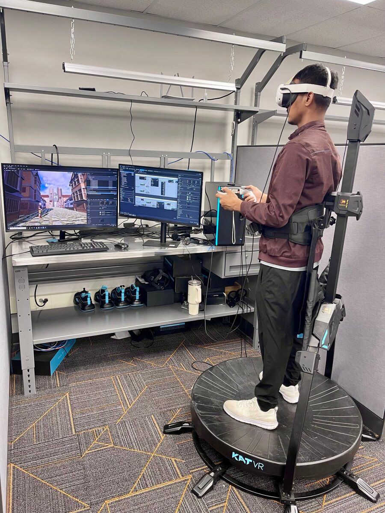

Undergraduate research
Eye tracking and cognitive load
An eye-tracking study of how pricing and visual complexity on e-commerce websites relate to users' cognitive load and decisions, using fixations, saccades and task time.
Read the preprintMSc Student in Computer Science · Idaho State University
I study how people interact with complex systems, especially in virtual environments. I am building a VR serious game that recreates Renaissance London to study engagement and learning in postsecondary literature education.
I am broadly interested in designing systems that make complex technology more understandable and accessible, at the intersection of HCI, virtual reality, and usable security.
Research

Master's thesis · RIGHT Lab · In progress
A gamified VR reconstruction of London around 1600 that lets students explore the world of Renaissance literature.




Lit-VR is a gamified VR environment that reconstructs Renaissance London from scratch for literature education. Recreating London around 1600 required me to research historical references, including the architecture, streets, landmarks, and maps of the period, to make the environment as historically accurate as possible.

Research question
How does exploring a place in VR, instead of reading about it, affect students' engagement, interpretation, and learning?
Status: Pilot study in progress (Fall 2026)
Undergraduate research
An eye-tracking study of how pricing and visual complexity on e-commerce websites relate to users' cognitive load and decisions, using fixations, saccades and task time.
Read the preprintHuman-AI · MSR 2026
A large-scale analysis of 33,596 AI-generated pull requests across 2,807 open-source repositories, comparing five autonomous coding agents.
Read the paperUsable privacy · Under review
A systematic literature review of 39 studies on how privacy and security risks are communicated to children in digital games.
See publicationsPublications
Lit-VR: Building a Gamified VR Platform for Enhancing Post-secondary Literature Pedagogy
IEEE 5th International Conference on Intelligent Reality (ICIR), 2026
Co-author DOIA Task-Level Evaluation of AI Agents in Open-Source Projects
Mining Software Repositories (MSR), 2026, ACM
First author DOIChild-Centered Privacy and Security Risk Communication in Digital Games: A Systematic Literature Review
Under review, International Journal of Child-Computer Interaction
First authorA Study of Consumers Cognitive Load in eCommerce Websites using Eye-tracking Technology
arXiv preprint (undergraduate thesis)
First author arXivEducation
Teaching
Projects
Game · GameMaker Studio
A 2D platform game exploring movement mechanics, level design, and how difficulty and feedback shape player experience.
View on GitHubHCI · Arduino
A gesture-based input system that replaces the mouse with hand motions for hands-free navigation in Google Earth.
Web · Arduino, Laravel
A web portal for managing patient data, with fingerprint-based login built on Arduino.